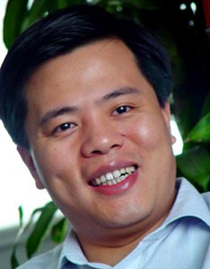
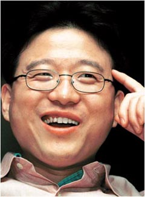
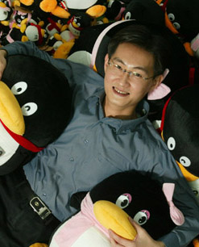

| 历数20位大陆商业精英 |
| 《首席执行官》CEO.ICXO.COM ( 日期：2005-09-14 10:53) CEO频道今日最新资讯 |
|
|
|  http://images4.icxo.com/20059/20059141193cho191.jpg 了不起的陈天桥 生于1973年；个人财富：56亿元(家族财富：139.75亿元) 年龄：32岁 出生地：浙江新昌 毕业院校：复旦大学 职务：盛大网络董事长 公司总部：上海 上市情况：纳斯达克-SNDA 盛大 (2004年5月上市) 如果32岁时就拥有56亿元的身家财富，你会做些什么？ 从2005年陈天桥的一系列大动作，我们得出的答案是——追逐更多！ 这位中国首富没有躺在盛大的金矿上洋洋自得。他先是用近乎野蛮的方式出其不意地将手伸向了中国最大的门户网站新浪(行情 论坛)，试图通过股权收购，在新浪打造出一种整合新闻内容、网络游戏、无限增殖服务资源的新盈利模式。 现在，陈天桥又一头扎进了一项据他说“够盛大做一辈子的事业”——基于IPTV平台商业应用基础上的“家庭数字娱乐中心”计划。过去数月中，他拿着在美国IPO融到的4亿美元飞来飞去大肆“买入”：从收购手机游戏商数位红，到收购原创娱乐文学门户起点中文网，到做出被称为“盛大盒子”的“机顶盒”，再到结盟环球音乐网……“要做就做最大、最好的唱戏者！”陈天桥毫不掩饰自己的野心。 这个了不起的年轻人没有一刻消停过。旺盛的精力，远大的理想，强烈的冒险欲望，清晰的社会责任感……盛大今天的成功，很大程度上得益于陈天桥的强势性格。 当陈天桥和盛大传奇般的财富故事已被人耳熟能详，我们却无法预见，明天他会演绎出怎样更为惊人的精彩。  http://images4.icxo.com/20059/20059141193cho192.jpg 网络幸存者丁磊 生于1971年；个人财富：70亿元 年龄：34岁 出生地：浙江宁波 毕业院校：中国电子科技大学 职务：网易公司创始人兼首席架构设计师 公司总部：广州 上市情况：纳斯达克- NTES 网易 (2000年6月) 如果说还有谁能威胁到陈天桥的网游霸主地位，此人必是丁磊。“他可能是互联网时代跑的最快的一只兔子，”有评论如此形容经历网易在纳斯达克从垃圾股到互联网明星大落大起后幸存下来的丁磊。 今天，网易在网游领域已开始显露超越盛大的苗头——其2002年推出的《大话西游II》和2003年发布的《梦幻西游》，已占据了国内游戏市场过1/5的份额。2005年第一季度，网易实现了总收入和净利润同比50%的增长。 八年前创业，丁磊26岁，“当时年轻，只觉得做互联网这个事好玩。为的是一份因热爱而生的快乐。七分理想，三分生意。而今，则是三分理想，七分生意。” 丁磊乃是一地道“土鳖”，在顶上网易首席执行官这一洋头衔之前，他的身份曾是中国电信技术工程师、美国赛贝斯(中国)公司技术支持工程师。互联网领域丰富的从业经验，培养出丁磊敏锐的市场触觉。 在率领网易艰苦“抗战”的八年中，丁磊始终致力于寻找新的“宝藏”：最初首推中国第一个双语电邮系统，2001年利用短信服务重振网易雄风，而后在短信危机来临前找到网络游戏这条新的生路。据说，网易很多产品的创意源于丁磊的灵感。 现在，这只“兔子”还在网络经济的大道上一路狂奔，不知疲惫。  http://images4.icxo.com/20059/20059141193cho193.jpg 小企鹅之父马化腾 生于1971年；个人财富：15.9亿元 年龄：33岁 出生地：广东潮阳 毕业院校：深圳大学计算机系 职务：腾讯控股(资讯 行情 论坛)首席执行官 公司总部：深圳 上市情况：香港-腾讯控股(HKSE:0700.HK) QQ这由几个小年青摆弄出来的小玩意儿，旺得实在令人嫉妒，马化腾创业初期，凭着一个小小的即时通讯软件在4年间做到销售过亿元，撰写了一幕深圳版的硅谷传奇。他不仅成功地粘住了中国最大的注册互联网用户群体，还在恰当的时候，将这种影响力和忠诚度实现了商业化，探索出一条全新的盈利之路——不管是付费注册，还是QQ短信聊天，腾讯无不大获成功，公司盈利也像当年QQ会员注册的势头一样“疯长”。 但是腾讯发展也有多事之秋，与突飞猛进的事业齐头并进的，是满天飞的收费服务传言、层出不穷的用户密码被盗、Q号网上大拍卖等问题，马化腾作为小公司大市场的领头羊确实也被折腾得够呛，不过他还总是斯斯文文的笑。 无论从目前市场占有率还是后继实力上看，微软MSN都是腾讯最大的竞争对手，腾讯的未来很大程度上取决于其是否能成功抵御MSN的威胁。现在腾讯主要的办法还是继续在QQ上开发新应用，集成新功能，毕竟QQ越强大，也越难被憾动，而这也正巧与腾讯寻找新盈利模式的目标完全一致，于是巩固地位与持续盈利间就能形成了不断加强的良性循环。从这一意义而言，MSN超越QQ殊为不易，在MSN咄咄逼人的进攻面前，QQ或许自有防御之道。 现年33岁的马化腾是广东潮阳人，处事低调，不擅言语，平静且淡然，只有谈到计算机和网络，才会不时露出开心的笑容和得意。就是这样一个年轻人，将继续带领QQ打好防御巩固战役，续写“QQ版”的网络神话。 优等生唐越 生于1971年；个人财富：7亿元 年龄：34岁 出生地：江苏南京 毕业院校：南京大学商学院职务：北京艺龙公司董事长兼首席执行官 美国CONCORDIA学院 公司总部：北京 上市情况：美国-纳斯达克(股票代码: LONG) 唐越以出让艺龙20%的股份为代价，换取了华尔街机构投资者对艺龙的认可，并最终将发行价标在13.5美元的最高价格上。 唐越和他创办的艺龙记载了国内互联网行业的盛衰史。伴随着互联网的大起大落，唐越一直手掌大旗，收购兼并、剥离分立、买进卖出，上演了一幕幕资本大戏。外界曾经有评价说唐越是互联网经济当中，玩资本市场做空手道做得最成功的人。从城市生活门户网站到商务旅行服务商，唐越那些激动人心的资本运作手法别人却很难模仿。最让赞叹莫过于一次精彩的“高抛低吸”。在互联网最火热的2000年3月，唐越高价将还没有盈利的艺龙卖给了美国的互联网通讯公司Mail.com；一年之后，在互联网的冬天来临之前又以低价将艺龙赎回。 在唐越看来，旅游业将成为整个国内电子商务行业的优等生。他一面在不断清晰“酒店加机票”的商业模式，一面又获得大笔的风险投资，为艺龙的发展一次次注入活力。今天的艺龙，长的一副宣扬小资生活都市青年的模样，但是骨子里，早已变成打着算盘、替你周密计划商务行程的办公室阿姨。 一副“大男孩”气质的唐越，带领着艺龙冲进了纳斯达克，如今艺龙的规模早已超越唐越创业初期的预期，用心经营艺龙成了唐越最大的爱好。因为是爱好，所以一心一意、情有独钟，所以不浮不躁、不急功近利，他正在把艺龙一步步地带向他梦中的天堂。 吴峻还在幕后 生于1971年；个人财富：约2.34亿元 年龄：34岁 出生地：浙江新昌 毕业院校：伦敦帝国科技大学职务：掌上灵通董事长 公司总部：上海 上市情况：纳斯达克-掌上灵通 (2004年3月上市) 相比几个月前我们做《互联网IPO第二波》的时候，吴俊和他的创业团队，身家已经跌去了将近一半。但为此犯愁的，恐怕不是吴俊自己。 吴俊当然有资本气定神闲，因为他有一个全能职业经理人——杨镭。似乎吴俊最大的成功并非创立的掌上灵通，而是在掌上灵通创立后的关键时点请到了杨镭。 专注一度被认为是掌上灵通的最大优势，过去4年里，灵通网什么也没干，只潜心于无线娱乐增值的业务。直到最近，情况发生了转变。2004年底，掌上灵通由于SP业务违规操作，挨了中移动的扳子。面临运营商在无线增值业务上的“铁腕”政策，掌上灵通不得不开始为自己寻找下一块利润蛋糕。 2005年，杨镭率掌上灵通开始为拓展新的盈利领域而折腾：高调进军网游市场，拿到了韩国最受欢迎的游戏《锤锤 Online》的中国代理权，并收购了远航游戏中心；而后高调宣布与与携程网、51JOB等企业将展开全方位地合作，计划将其酒店服务、工作咨询等产品放在手机业务上，实现手机点播。 尽管在上述的种种大动作中只见杨镭，未闻吴俊，但我们相信吴俊不可能一直隐于幕后——因为这个“技术天才”的理想是，做一家世界级的高科技公司，这个梦想注定吴俊消停不了多久。 青年才俊周鸿 生于1970年；个人财富：不明 年龄：35岁 出生地：湖北 毕业院校：西安交大 职务：雅虎中国CEO、3721董事长 公司总部：北京 上市情况：未上市 三十而立！在而立的年龄段，把一手养大的3721嫁给雅虎，这需要多大的勇气？ 办企业的很多，企业达到一定规模后把企业卖掉的更多，难得的是把一手养大的企业卖掉后转而进入新企业继续新的里程。 周鸿就是一个少见的经典，其一手创办了3721公司，开创了中文上网事业，催生了一个产业，在渠道上还享有教父的美誉。 尽管顶着无数的光环，2003年在3721过完第五个生日后，天才程序员周鸿没有随大流选择上市，而是选择委身雅虎成为雅虎大家庭重要成员之一。做为企业创始人，周鸿没有随大流套现后就选择离开，而是留下来与原3721成员老雅虎中国成员共同缔造一个雅虎中国的传奇。 在一个被外人称做土鳖企业与国际大企业融合的过程中，周鸿雷厉风行，在很短的时间里，成功的实现了企业整合。 实现了“攘外必先安内”的企业文化整合目标后，新雅虎中国开始以崭新的形象亮相中国。在周鸿的直接带领下，新雅虎中国雷厉风行推出一搜、升级1G邮箱、电邮联盟策略。如今一搜已经稳居国内三甲搜索门户，而雅虎中国首推的G级邮箱战略则点燃了当年国内互联网G级邮箱大战。而雅虎中国的电邮联盟则使更多互联网公司尝到了邮箱的甜味，净化中国邮箱市场的效果。 35岁的周鸿，站在中国传统而立与不惑中间，却为我们展现着怀抱远大理想积极付诸实践的青年企业家风范，而我们从周鸿35岁的背影中看到的分明是一个个性鲜明、不断寻找挑战的青年才俊。 富女陈宁宁 生于1971年；个人财富：34.2亿元 年龄：34岁 出生地：不详 毕业院校：纽约技术学院工商管理 职务：香港嘉鑫控股董事总经理 公司总部：香港 上市情况：上海—稀土高科(600111，第二大股东)；香港—东方集团(0581，第二大股东) 一个斯文女子，纽约工学院工商管理硕士，27岁开始执掌一个矿业帝国，33岁时成为沪港两地上市公司之副董事长，个人财富值目前高达34.2亿元(据报道其家族财富已达到68.4亿元)——这一切，似乎只可能发生在香港言情小说女主角的身上，但陈宁宁却实实在在地演绎了上述梦幻情节。她的出现，打破了矿业行业由男人主导的惯例，她的生意占据了中国进口铁矿石10%的份额。 第一桶金由何而来？这个问题无人知晓。但她所控制的香港嘉鑫控股集团之规模庞大已是不争事实，该集团旗下拥有数十家全资或控股子公司，业务涉及矿业资源、贸易、物流、实业、金融服务等五大板块，在北京、青岛、上海、武汉、美国、澳大利亚、印度、巴西等地均设有分支机构。据说，嘉鑫控股未来将会把产业链条往上游提升，筹备收购海外铁矿、煤矿等矿业资源。 不仅如此，这名女子的投资眼光亦相当犀利，其参股的两家上市公司都是优质业绩的资源型大企业——稀土高科的稀土资源占据世界探明矿藏量的72%，具有罕见的垄断全球的资源优势；而另一家公司东方集团所带来的股权增殖回报更另其口袋满满。更厉害的是，在金融领域也可以见到陈宁宁的身影：2002年2002年5月24日，嘉鑫控股与台湾太阳保险代理公司合资成立北京嘉信保险代理公司，宣称有望保费收入三年内进入全国保险界五强。 “今日的成就，系运气多一点，当然都要有眼光，”陈宁宁对待外界好奇一贯低调、谦逊。但不知明日这名商界奇女还会带来怎样的动人看点。 徐明：未来的“石油新贵” 生于1971年；个人财富：约30亿元 年龄：34岁 出生地：辽宁庄河 毕业院校：沈阳航空大学(硕士) 职务：大连实德集团董事长 公司总部：辽宁大连 上市情况：上海-600146宁夏大元(2000年12月)，上海-600480凌云股份(2003年7月) 过去，有人曾玩笑的说，徐明天生就是一个富翁，因为他五指并拢、滴水不漏。也有人大胆认为，没有徐明，大连实德可能一天也生存不下来。 不管这些传说是否准确、可信，但至少有一点却是肯定的：从21岁进入商界开始，在十几年的历程中，“徐明曲线”一直是直线上升的——从对虾到土石方，到塑钢，再到石油化工。每一次跳跃都显示了他超人的胆识和长远、独到的眼光。 如今，这个曾经在中国足坛以敢于直言而闻名的足球大亨，以身价约30亿元排在“2004《福布斯》中国富豪榜”第13位的富豪，却在一种名为石油的问题上，变得谨言慎行。 尽管这个被视为民企资本进军石化行业的旗帜性项目，已经打开初步局面，但由于资金、选址、定位和具体运作模式等诸多问题的模糊不定，至今仍然无法获得明显的进展，也因此使它的主人的石油梦想变得难以捉摸。 也许在不久的将来，这种被称为“黑色黄金”的玩意，将让这位已经让很多人惊讶的年轻富翁诞生更多的神奇。 但是在目前，徐明最不愿意提及的话题就是石油。 低调的周益明 生于1974年；个人财富：10亿元 年龄：31岁 出生地：浙江慈溪 毕业院校：宁波甬江财经学院职务：明伦集团主席 公司总部：广东深圳 上市情况：香港-0346明伦集团(2002年8月)，上海-600101明星电力(2003年3月) 一张年轻的脸，似乎没有人会把他看在眼里。 直到他收购联大集团(0346.HK)，并更名为明伦集团；击败娃哈哈、健力宝等极具实力的公司，将明星电力(600101)收入囊中；与ST太光(000555)短恋的初始等等一系列资本运作之后，人们才开始真正注意到他的存在。 导演这一幕幕“好戏”的人，就是今年34岁的明伦集团主席周益明。 然而，面对资本市场上的成功，周益明却选择了低调。 如此强烈的反差，必然引发了外界的猜测。于是，一时间，“神秘”、“低调”、“玩空手道”等词汇全用在了他的身上。 事实上，周益明并非是在“做秀”，而是其比较务实、不太张扬的性格决定了这一切。 作为一家民营企业，明伦集团近年来确实发展很快。“如果对外的宣传过多，会惹来不必要的麻烦，给企业带来困扰。低调是保护自己的一种方式。” 明伦集团整体的低调，恰恰印证了中国的一句古话：闷声发大财。 无疑，年轻的周益明还会继续在资本市场上征战，正如他所说的明伦集团快速发展的秘诀在于资产整合。“如果光靠自身积累，发展速度肯定要打折扣。通过进一步整合，集团收购的资产都得到了大幅增值。”而至于他本人是选择继续隐身，还是选择时机亮相，这还没有确定的答案。 阳光商人张志熔 生于1972年；个人财富：10亿元 年龄：33岁 出生地：江苏如皋 毕业院校：松江建筑工程学校 职务：上海阳光投资集团总裁 公司总部：上海 上市情况：未上市 张志熔在19岁时怀揣打工挣来的三万元开始创业。1994年，他在上海房地产处于低潮的时期创办了一家建筑工程公司，集资开发了60多万平方米商品房，从此他在上海开发的地产项目一个比一个出名。而后，他开始涉足杀虫剂、信息技术和生物医药等行业，且都取得了不俗的成绩。 这个精明的商人充分意识到了科技和人才对于企业发展的重要性。他投入巨资与交通大学农学院、上海农科所合作开发、生产新型饲料添加剂和预混饲料，与内地工厂合作生产新型除草剂，与外商合资开发生产生态农药，与国家科技部合作开发无水栽培草毯技术，引进荷兰先进技术在松江建大型牛奶加工厂……在获得经济利益的同时，张志熔也有着强烈的社会责任感，他经常为福利事业慷慨解囊。 “涨潮的时候赶海，你很难得到大海的馈赠；退潮的时候，哪怕在海滩信步也能捡到美丽的贝壳。商机也是这个理。” 张志熔说，这就是自己的从商信条。 大隐于市的潘培东 生于1971年；个人财富：8亿元 年龄：34岁 出生地：江苏盐城 毕业院校：小学 职务：亨威实业集团主席、总裁 公司总部：江苏 上市情况：未上市 潘培东的面庞有一种与他年龄不相称的沧桑,在媒体面前，潘一贯低调。 与其他十九位《新财经》评选的“中国最具潜质的青年商业精英”相比，潘培东绝对是商业经历最长的一位——34岁的他已闯荡了24年的江湖。 潘家有7个兄弟姐妹，当年生活贫寒，为减轻家庭的负担，11岁的潘培东小学三年级还没有读完就步入了社会。开始，他摆摊卖些竹器，攒了些小本钱后只身闯到浙江倒卖服装和鞋子，开了一家属于自己的小门店。“说句实话，当时也没有什么雄心壮志，只是为了养家糊口。” 潘培东说。从此，他在服装业开始了势不可挡的发展。 尽管文化不多，但潘培东有着异常精明的头脑和清晰的见解，他给自己的企业选择了一条专业化经营的道路——为大公司生产制服。现在，公安部99式警服、最高人民法院2000式审判服、中国网通集团的制服全部出自“亨威”之手。作为集团公司董事局主席、总裁的潘培东，也因他的诚信经营而被评为了“江苏省优秀青年企业家”。 值得注意的是，亨威集团并非家族式企业，而纯粹是潘“一个人的企业”———除他外，潘家没有一人在亨威集团中任职。 认真的盛静生 生于1971年；个人财富：3.8亿元 年龄：34岁 出生地：浙江奉化 毕业院校：浙江大学经济学硕士、北京大学EMBA职务：罗蒙总裁 公司总部：浙江宁波 罗蒙，中国服装行业少有的20年企业。盛静生，刚过而立之年的年轻总裁。将二者放在一起比较，感觉非常奇妙。 第一家聘请影视明星担任形象大使，第一家西服出口量最大企业，第一家以西服综合分第一被授予“中国名牌”，第一家聘请国际顶级设计师担纲首席设计……占尽先机的罗蒙，十几年如一日稳坐品牌大潮的风口浪尖，而挥师背后的盛静生却始终不愿将自己炒作成明星人物。 熟悉盛静生的人都知道，他不喜欢出风头，也不太喜欢在论坛上或企业座谈里讲话，甚至连类似的活动也不会参与。 如此的淡泊和冷静，很难使人将它同一个刚过而立的年少俊才联系在一起。从传承红帮服饰衣钵，到理性地洋为中用，直至形成具有标志性特色的品牌理念，盛静生和他的罗蒙团队用实战话语标定了自身所处的位置和高度。“我认为我一定要干实事，这是我的性格，也是我的准则。” 面对时装界的浮华和喧嚣，盛静生自始至终保持着清醒的头脑，并且善于从思考中获取企业与自身成长的力量。他说：“没有压力，无以成长。也许我在压力之下很早就没有了青春，但却真实地感受到了责任，这于我是一笔不小的财富。现在我相信，没有办不了的事情，唯一需要面对的是，在遇到发展瓶颈和遭人非议的时候，能不能正视自己。” 没有人怀疑盛静生的定力和魄力，如同没有人怀疑罗蒙的实力和潜力，这注定了他每走一步都不是自说自话。 企业帮助企业家完善修养，企业家的个性千丝万缕地融入每个企业行为。到最后，企业家与企业完全无法分开。盛静生举手投足间都表现着罗蒙的庄重、优雅，而罗蒙的一举一动也带有盛静生的人生智慧，罗蒙的未来就在这个中国服装界最年轻“少帅”的胸怀中。 钢铁小子丁立国 生于1970年；个人财富：3.3亿元 年龄：35岁 出生地：河北丰润 毕业院校：河北理工学院机械制造专业，清华大学MBA研修班进修 职务：邢台德龙钢铁实业有限公司董事长 公司总部：河北 上市情况： 要在凭借资本、人脉、经验说话的钢铁行业崭露头角，得熬到多大年纪？ 对于钢铁小子丁立国来说，这可真不是个问题。没满30岁，他就买入了一家钢铁厂，并用一年不到的时间把它扭亏为盈。 “我要感谢父母把我生在70年代，迫使我为了生活跳身大海学会自己游泳。”在河北省唐山市丰润县度过自己中学时代的丁立国，受改革开放初期的新思想影响，早早的就在自己不安于现状的心里埋下了经商的梦想。 1989年，丁立国于考上了河北理工学院机械系，“那几年机械的书没看多少，国内贸易、市场营销等经营管理类的书倒读了很多。”1991年春天，大学毕业的丁立国只身闯荡深圳，并很快找到自己的位置——深圳市福田区物资局业务员。1993年，是丁立国人生的转折点。这一年，已在深圳闯荡两年的丁立国毅然做出一个改变他一生命运的重要决定——回家乡唐山创业。 1999年末，丁立国收购了因管理不善停产几年的邢台市新牟钢厂，只用了8个月时间，就实现了扭亏为盈。“对于没有任何背景的年轻人来说，机遇是起步的基石。”丁立国说，别人用几年甚至更长时间积累财富的起步阶段，而自己只用一年就完成了，“确实有些幸运”。 对于财富的价值、成功的含义，丁立国有着更深的认识，“人的生命是脆弱的，瞬间就可能消失，生命消失的时候财富失去意义。挣百万元以上是自己的，挣千万元以上就是企业的，挣亿元以上不管你承认与否，实质就是社会的。为个人生活享受奔波，那是挣钱；为社会利益而奋斗，才叫事业。” 丁立国一年中的时间是三三制，即三分之一时间在企业，三分之一时间看书学习，三分之一在外考察学习。他说：“做钢铁行业百年老店需要不断学习，只有这样，我们才能保持在钢铁行业第一方阵中。” 王伟斌：为富当仁 生于1971年；个人财富：不详 年龄：34岁 出生地：北京 毕业院校：不详 职务：双全集团董事局主席 公司总部：北京 上市情况：未上市 选择王伟斌看重的是他的社会影响力，而非个人财富。 王伟斌的个人财富始终是个谜，他从不透漏自己的身价。我们所仅见的是他出席各种社会活动场合，以及向各种公益活动捐款时忙碌的身影。王伟斌强调的是企业家的社会责任感。 事实上，王伟斌的人生经历并非坦途。据说，王伟斌初中毕业就没能再次踏进学校大门。未竞的教育经历成了他心中永恒的遗憾。这也是他后来专注于教育领域，成为我国教育信息化的推动者和国内智能教育软件空白的拓荒人的动力所在。在8年的艰苦创业之后，王伟斌公司的总资产由10万元成长到20亿元。他专注于软件科技、房地产开发领域，并引领着旗下11家从事各行业的子公司。 “为富不仁”并不适合用来形容成功之后的王伟斌，让人印象深刻的是他对希望工程和抗击非典、青年志愿者行动等慈善事业的持续支持。王伟斌的热心得到了社会的认可，他作为唯一的企业家获得了第14届“中国十大杰出青年”的称号。 判断一个人的真正品行，往往不在于看他克服了成功道路上蕴含的多少苦难，而在于他成功之后如何运用他的财富和影响力。这就是《新财经》选择王伟斌的理由。 丁志忠 生于1970年；个人财富：不详 年龄：35 出生地：福建晋江 毕业院校：晋江民族中学 职务：安踏集团总裁 公司总部：晋江 上市情况：未上市 一个乡村间白手起家的年轻人，能够创造怎样一个激动人心的传奇？ 初中毕业的丁志忠十数年磨一剑，如今“安踏”在国内运动鞋市场综合占有率第一，拥有4000家零售网点，近万名员工，并且是行业唯一的“中国驰名商标”。 现在，“安踏”的成长渴望丝毫不减，丁志忠梦想创造第二个奇迹。他想超越的第一个目标是李宁公司，更远的超越目标则是美国耐克。 丁志忠的“中国梦”能实现吗？ 黑马汪浩 生于1971年；管理资产：70亿元 年龄：34岁 出生地：天津 毕业院校：天津大学 职务：顺驰集团董事局主席 公司总部：天津 上市情况：未上市 一年以前，要在地产圈里问：汪浩是谁？很少有人能给出答案。但当2005年1月19日，号称地产黑马的顺驰集团董事长孙宏斌，将集团董事局主席的权杖郑重交到这个年轻人手中时，他斯文俊朗的外表、沉稳睿智的谈吐以及富有逻辑的思维迅速给人们留下了深刻的印象。 工学硕士，研究院设计师，两年供职万科，商业银行从业两年——汪浩在加盟顺驰之前的八年里经历丰富。按说工科背景培养出的人应该思维偏理性，但汪浩却觉得自己到顺驰以后变得越来越主观了。他说自己信奉康德在实践理性批判中的一句话名言：世界上最伟大的，乃是“外在的星空与存在我内心的道德法则”。顺驰的成功，验证了这个商业时代同样的一个道理：“人有多大胆，措施找到了，地就有多大产。” 在商人身份的汪浩身上，可以发现另外一些与众不同的艺术气质——他闲暇时会阅读捷克.伦敦的《野性呼唤》，罗曼.罗兰的《约翰.克里斯朵夫》，《西方哲学简史》。他认为，“人最大的竞争对手不是别人而是你自己。”所以他喜爱高尔夫运动，尽管球技一般，因为“高尔夫是一种锻炼自己控制情绪能力的运动，也是世界上唯一一种自己和自己叫劲的运动。” 汪浩带领顺驰踏上了“新十年”的征程，摆在他眼前的目标，是实现顺驰三到五年内实现500亿乃至1000亿的销售额。与此同时，他要兼顾保证股本回报率和公司盈利能力的提升；促进管理团队的完善；做出正确的投资选择。 伊利的潘刚时代 生于1970年； 管理资产：46.06 亿元 年龄：35岁 籍贯：内蒙古职务：伊利股份(资讯 行情 论坛)董事长、总裁 毕业院校：内蒙古农业大学，中欧工商国际管理学院EMBA 公司总部：内蒙古 上市情况：上海-伊利股份 (代码：600887) 于2005年6月20日召开的伊利股份2004年度股东大会上，公司总裁潘刚被选举为伊利股份新一届的董事长，终于伊利股份结束了动荡长达半年之久的高管人事变更，潘刚以100%的赞成率当选为董事，毫无争议地坐在了“伊利第一人”的交椅上，也是众望所归的一种结果。 这位被业界称为少帅”的年轻董事长，平日行事低调，即使当选董事长后的他也是不愿过多曝光，他只告诉广大投资者一句话：“自己能得到全体股东的支持和信任，感到非常激动，大家的期望对我是一种压力，更是动力，相信伊利股份在社会各界的共同支持和合作中，一定会更加稳健快速地发展，回报社会和股东。” 这位少年老成的“少帅”，在危机关头所表现出来的冷静、果敢，超凡的管理天赋和做事风格的有条不紊都赢得了各界的称赞，对于潘刚掌舵后伊利的前景，还是借用投资者的原话表达更为贴切一些，那就是：“我们看好潘刚的能力。” 在乳品业这样一个“兵火连天”、严重激烈竞争的行业中，潘刚是最年轻的掌门人，但是潘刚的一腔抱负却丝毫不逊于别人，他的自信源于伊利的核心竞争力——成熟的企业管理、坚强的领导团队、强大的公司品牌，和一流的设备、生产线。潘刚带领着这支团队，正在朝着既定的目标迈进着——到2012年进入世界乳业20强的战略目标。10年增长6倍，这对任何企业来说都是一个巨大的挑战，但对潘刚来说，这个目标并非遥不可及。 李兆会：我不是“阿斗” 生于1981年；个人财富：30亿元 年龄：24岁 出生地：山西省闻喜县 毕业院校：澳大利亚Monash大学 职务：海鑫钢铁董事长兼总经理 公司总部：山西闻喜县 上市情况：未上市 李兆会并不属于七十年代生人，但因为其在人生大波折面前的镇定与坚强，初生牛犊不怕虎的勇气和决心，〈新财经〉还是将其选入了“二十位中国商界最具潜质的青年商业精英”之列。 2003年1月，父亲遇刺身亡，李兆会放弃了学业，悲痛中执掌了家族企业。 接手第一年成绩良好，海鑫集团销售额翻了一番，纳税增加了2倍多。在福布斯排行榜上，李兆会是中国第一个因继承大笔财富而上榜的第二代。 有着澳大利亚留学背景的李兆会，业已展现出与父亲李海仓不一样的商业风格。2004年底，李斥资6亿多，收购了民生银行和华冠科技的股权，表明了对资本市场的浓厚兴趣以及多元化发展的雄心。海鑫集团上市，在李兆会接手后加速了进程。 在企业内部，李兆会用铁腕证明自己不是“阿斗”。经过一场康熙式的“夺权斗争”后，小李清洗了父亲的旧部，完全掌控了海鑫集团的决策大权。下一步，雷厉风行的李兆会将把海鑫钢铁带向何方？ 承继者史跃武 生于1973年；个人财富：9.5亿元 年龄：32岁 出生地：山西河津 毕业院校：不详/大专 职务：山西振兴集团董事长 公司总部：山西河津 上市情况：未上市 史跃武应该感谢福布斯在2003年“发掘”了他，否则直到现在也许他还只是个不为人知、但坐拥近10亿财富的民营企业家。 史跃武低调的出奇！ 除了前不久由他主导的振兴集团与三九生化(000403)的一次资产置换之外，几乎看不到他的任何个人行动。这也许与他获得财富的方式有关。不同于其他白手创业起家的年轻人，史跃武2002年从他的父亲史民志手中继承了振兴集团。 一出场就是富豪，这在当代的中国绝对还属于少数派。正因为如此，他的表现越发让人们关注：他的身上寄托了人们对第二代民营企业家的希望，还有疑虑。 史跃武自小广泛游历，冀图采众所长。不过，他在经营企业方面的才能并没有很快表现出来。行业环境的变化给了他机会。整合电解铝产业链，做煤、电、铝一体化，一直是他父亲的主业，他一贯的经营理念似乎就是深耕自己的“一亩三分地”，对其他行业鲜有“问津”。但是，这在电解铝陷入全行业亏损的今天，注定难以为继。 比父辈有着更多见识、更宽视野的史跃武选择了通过资本运作、投资三九生化的方式解困。虽然还没有机会证明这着棋高明与否，但是史跃武的动作已证明他并不纨绔。 许世坛 生于1977年；财富：不详 年龄：28岁 出生地：福建石狮 毕业院校：悉尼科技大学学士、香港大学房地产硕士 职务：世茂集团执行董事、销售总监 公司总部：上海 上市情况：世茂股份(资讯 行情 论坛)(600823)、世茂中国(0649.HK) “上海豪宅教父”许荣茂的背后，儿子许世坛崭露头角。 海外留学归来的许世坛，展现了强大的自信和非凡的销售天才。世茂滨江花园大获成功，许世坛发挥了相当重要的作用。 与父亲许荣茂相比，许世坛有自己的特点：既深谙中国国情，也掌握西方先进的管理理念和手段。在上一轮中国房地产的汹涌增长中，小许的能力得到了锻炼。 许世坛能超越他的父亲吗？
来源:《新财经》
|